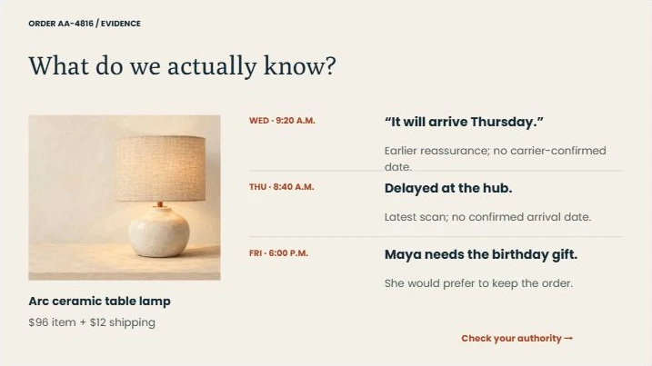
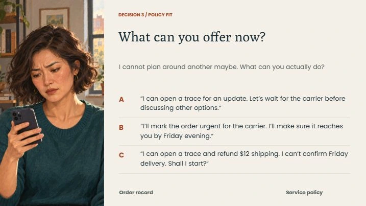
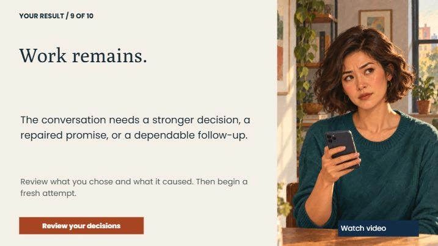

Self-directed concept / Alder & Ash
Service Recovery
A delayed delivery. An earlier reassurance. Five choices that shape a customer conversation—and a final plan that must hold up.
52-second design preview using the actual PowerPoint layouts, with visible captions. The launch above opens the complete interactive Storyline lesson. Preview transcript.
Audience and problem
Empathy needs a workable next step.
New customer-service employees at a fictional online retailer must handle a delayed order after an earlier unverified reassurance. The customer has a real deadline and asks for compensation beyond the representative’s authority.
The designed performance is an accurate, authorized plan with explicit ownership of follow-up. A friendly response alone is insufficient.
Learning objectives
By the end, the learner should be able to:
- Acknowledge the customer’s specific situation and distinguish verified facts from assumptions.
- Offer actions within policy and escalate a larger request without promising approval.
- Repair an inaccurate promise and confirm who will follow up, how and when.
Role and tools: self-directed instructional design and development; PowerPoint layouts, native Storyline controls and variables, HyperFrames video production, and AI-assisted writing, illustration and build automation. No client or learner-impact results are implied.
Three design decisions
See the instruction in the interface.

01 / Live course · Evidence
Evidence before reassurance
Learners can consult the actual order record from decision screens. The customer’s deadline is distinct from a confirmed delivery date.

02 / Live course · Decision 3
Plausible alternatives
Three response options represent recognizable workplace choices. Previewing a response does not commit it; sending records the decision and opens its consequence.

03 / Live course · Result
A high score still needs a clear plan
This attempt earned 9/10 but omitted a specific follow-up time. The mandatory requirement prevents a passing result until the learner makes a dependable commitment in a new attempt.
Assessment approach
Recover without erasing the mistake.
Five criteria each earn 0–2 points: acknowledgment, diagnosis, policy fit, escalation judgment and follow-through. Success requires at least 8/10, no unresolved unauthorized promise and a complete follow-up commitment.
The final response can explicitly repair an earlier mistake. It clears the unresolved promise, while the original decision still determines its criterion score. Review is read-only; replay starts a new attempt.
Decision structure
- AcknowledgeRespond to the specific impact.
- InvestigateUse current evidence.
- OfferStay within policy.
- EscalateKeep ownership.
- CommitRepair, then confirm follow-up.
Each decision has three options and tailored feedback. Branches reconnect; saved choices and open promises determine clear plan, credible recovery or work remains.
Download the editable branch mapResources and production
Designed for transfer
The one-page Service Recovery Conversation Guide carries the decision rules into future practice.
Poly headings and Poppins instructional text pair with AI-assisted illustrations. The finished courses use editable native text, controls, object states, variables and feedback layers.
Built, checked, and ready to explore
The complete 38-slide project was opened, saved, reopened and Web-published in Storyline. Visual review covered the base slides and selected interactive states. Published-player checks covered representative decisions, feedback, resources, results and retry.
The saved native trigger audit checked all 243 decision paths. These checks validate course logic; they are separate from learner evaluation.
Remaining validation includes a full screen-reader review, every feedback layer, broader browser testing and a learner pilot. Storyline’s accessibility checker still reports items requiring review. The 8–12 minute duration is a design target.
Proposed evaluation: observe new employees completing the task, record errors and time on task, and revise unclear evidence or controls. No measured learning gains are claimed.
Read the build-specific QA recordExperience the full lesson